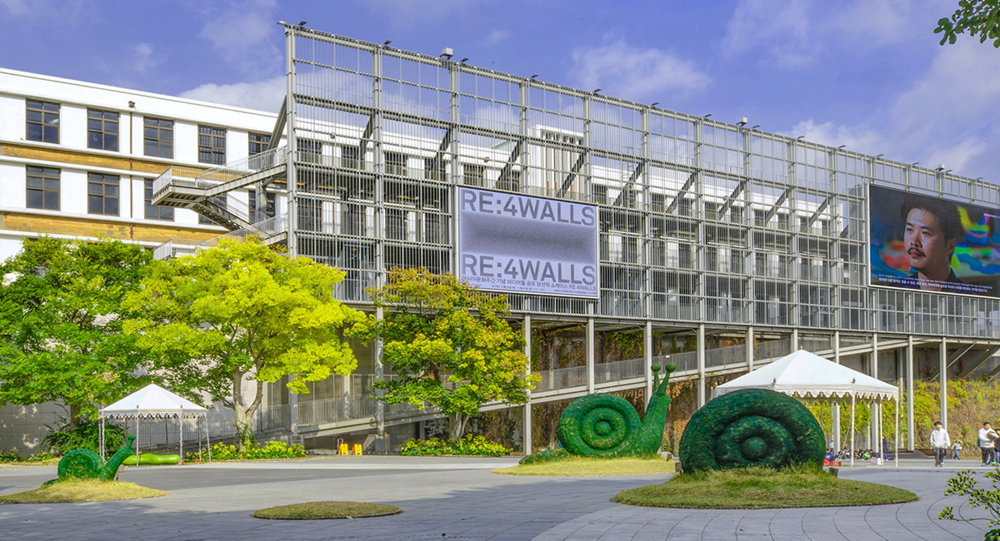
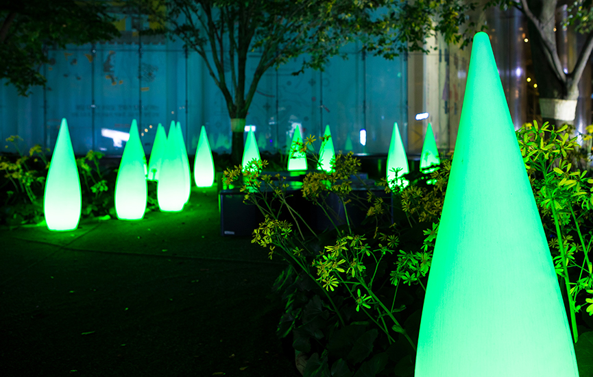

다양한 문화예술적 경험을 할 수 있는 공간
2012년 설립된 스페이스 오브 파랑(S.O.P)은 다양한 문화예술을 즐길 수 있는 거대한 예술집합체입니다. 현대 사진과 일상 속 예술로 자리매김한 디자인의 창의적이고 다양한 개념과 형식을 소개하며, 감각적인 각종 전시들과 교육, 문화 프로그램 등을 통해 많은 관람객들에게 예술을 나누고 또한 소통해 왔습니다. 또한 신진 예술가들에게도 전시 지원을 통해 본인의 작품을 알릴 수 있는 기회를 제공하고 있습니다. 앞으로도 스페이스 오브 파랑은 문화인들을 위해 수준 높고 창의적인 전시로 예술나눔 실천을 위해 노력할 것입니다.

밤이 되어도
아름다운 미술관
스페이스 오브 파랑은 연면적 15,126.81㎡에 지상 1,2층으로 이루어진 제 1 전시관과 제 2 전시관이 있으며 넓은 면적인 외부전시로 구성되어 있으며, 과감한 월프린팅과 컨테이너를 연상하는 현대적인 감각의 거대한 건축물입니다.
거대한 규모를 자랑하는 스페이스 오브 파랑은 실내공간 뿐만 아니라 외부에서도 야외전시를 진행하고 있습니다. 밤이 되면 조명들로 인해 낮일 때와는 또다른 매력의 예술작품들을 감상하실 수 있습니다.